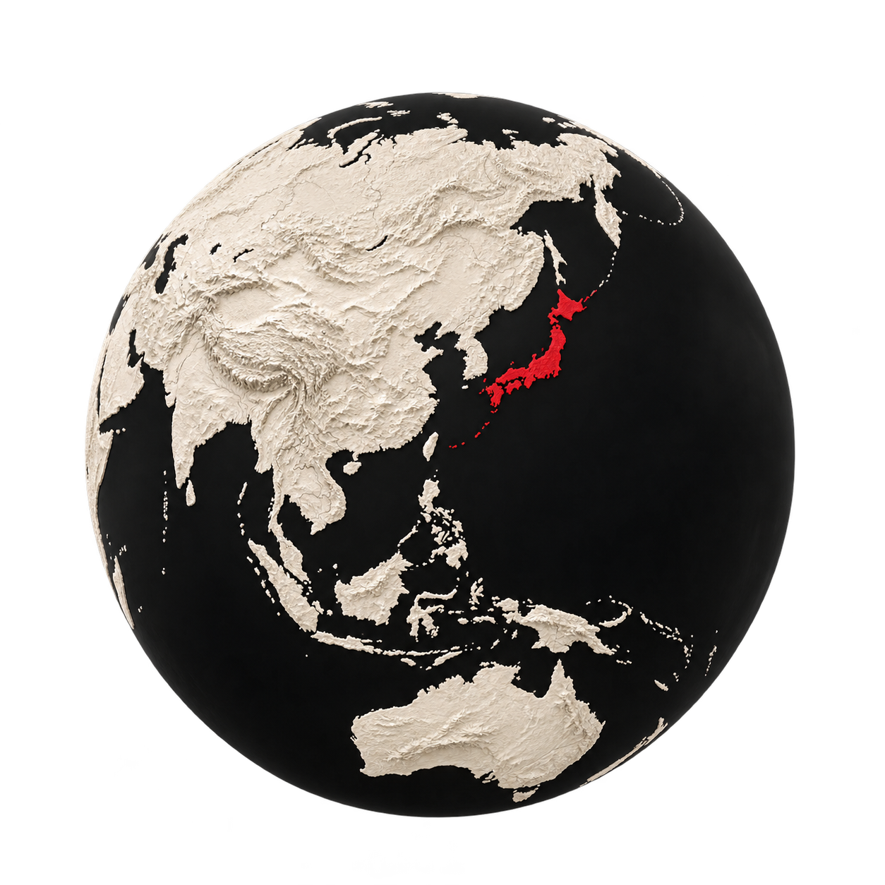
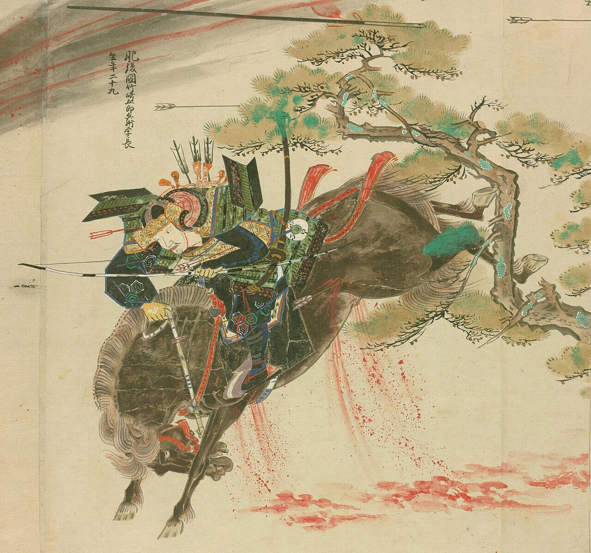
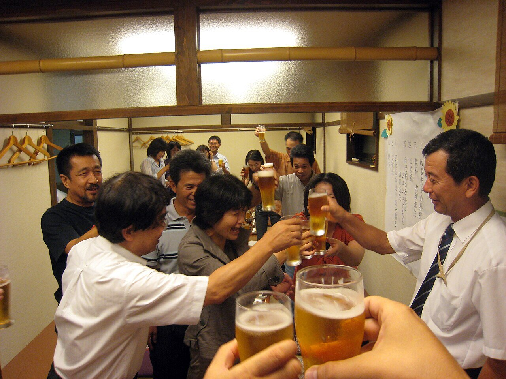
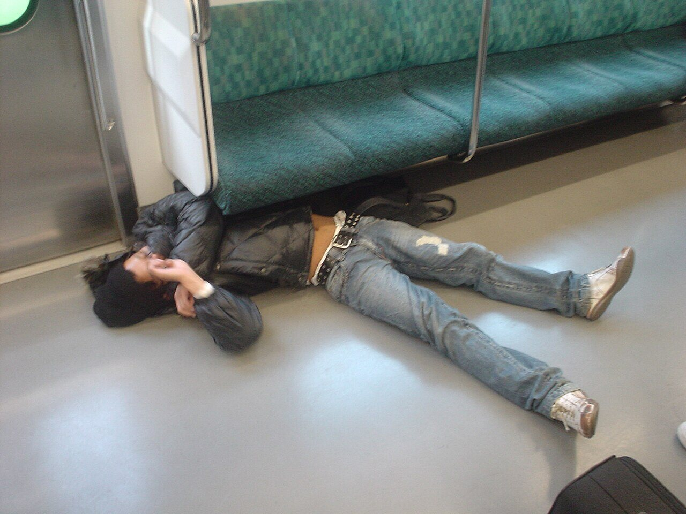
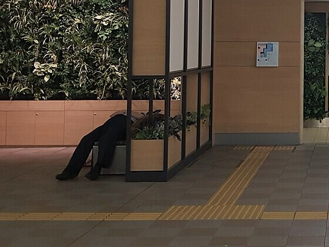
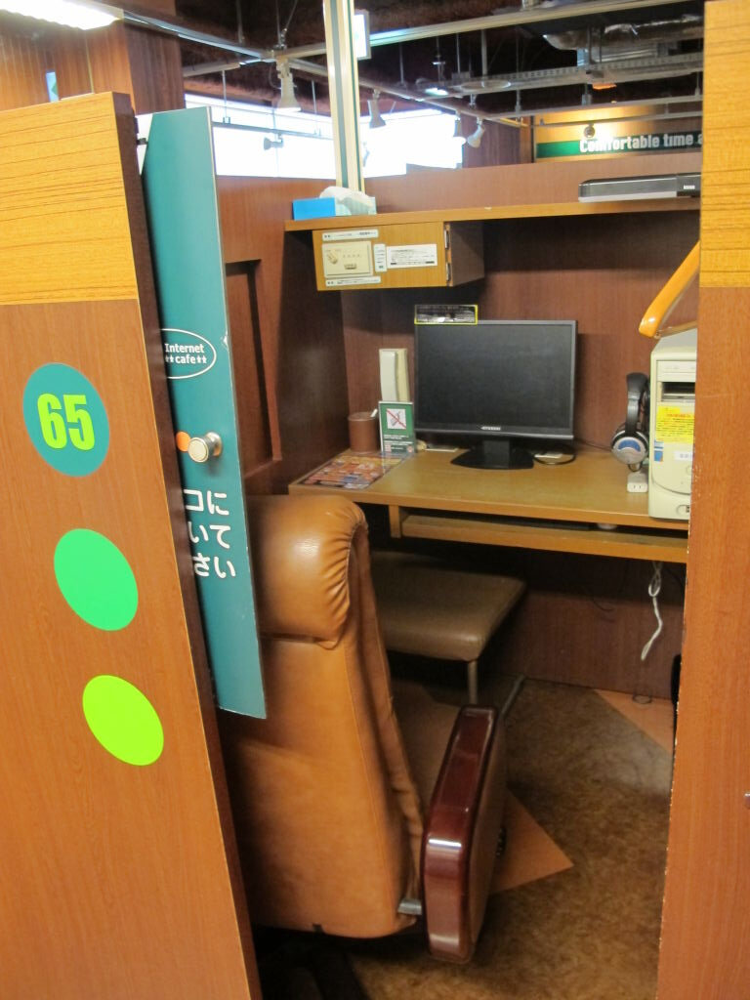

GrupoArthur Doebeli, Enzo Oliva, Gabriel Souza e Pedro Hang
O país · localização
02 — 13
O país · localização
No extremo leste da Ásia.
Um arquipélago no oceano Pacífico, próximo à China, às Coreias e à Rússia.

História · quatro viradas
03 — 13
História · quatro viradas
As eras que ajudam a explicar o Japão atual
Pergaminho · séc. XIII

Hiroshige · 1833
Xilogravura · 1871
Fotografia · Tóquio, 1945
séculos XII—XIXJapão feudal
Dever, hierarquia e lealdade organizavam a sociedade.
1603—1868Período Edo
Estabilidade e contato exterior limitado fortaleceram costumes próprios.
a partir de 1868Era Meiji
Abertura, educação, ferrovias e indústria aceleraram a modernização.
1945 em dianteReconstrução
Qualidade e exportações impulsionaram o milagre econômico.
A cultura atual não “veio dos samurais”: combina valores históricos, modernização industrial e reconstrução coletiva.
A história no cotidiano
04 — 13
A história no cotidiano
“
A modernização mudou o país. A vida coletiva continuou no centro.
01
Harmonia
Comunicação mais indireta para evitar constrangimentos.
02
Coletividade
Filas, silêncio e cuidado para não incomodar outras pessoas.
03
Ordem
Pontualidade, reverência, formalidade e respeito à hierarquia.
Não são regras para todos, mas mostram uma convivência que tende a priorizar o grupo.
仕事
Cultura de trabalho
05 — 13
Cultura de trabalho
Trabalho como dever.
01
Lealdade
Forte identificação do profissional com a empresa.
02
Hierarquia
Sair antes do chefe ou discordar diretamente pode gerar desconforto.
03
Karoshi
Termo associado a mortes causadas pelo excesso de trabalho.
04
Oidashi-beya
“Salas de expulsão” denunciadas como pressão para o empregado pedir demissão.
Gestão japonesa
06 — 13
Gestão japonesa
Consenso antes. Melhoria sempre.
Nemawashi
Construir apoio
A decisão é discutida informalmente antes da aprovação. Pode demorar, mas reduz conflitos na execução.
→
Kaizen
Melhorar aos poucos
Pequenos ajustes contínuos elevam qualidade, eficiência e controle dos processos.
07 — 13
Contraste cultural
Japão
Hierarquia mais formal
Decisão por consenso
Planejamento e padronização
Visão de longo prazo
Adaptação da gestão
Brasil
Relações mais informais
Decisões mais rápidas
Flexibilidade e improvisação
Proximidade na comunicação
×
Disciplina de processos × agilidade cultural
Empresa de destaque
08 — 13
Empresa de destaque · fundada em 1946
SONY
Masaru Ibuka e Akio Morita transformaram uma pequena empresa do pós-guerra em um grupo global de tecnologia e entretenimento.
Rádio transistorLevou a marca japonesa ao mercado mundial.WalkmanMudou a forma de ouvir música.PlayStationLevou a marca a novas gerações.
Sony no Brasil
09 — 13
Sony no Brasil
A operação mudou. A marca permaneceu.
1972
Chegada ao Brasil e, depois, produção de eletrônicos em Manaus.
2021
Fim da fabricação local e do antigo modelo de venda direta de eletrônicos.
Hoje
Produtos por distribuidores; PlayStation, música, cinema e soluções profissionais seguem ativos.
BR
Liderança notável
10 — 13
AKIO MORITA · 1921—1999
Liderança notável · cofundador da Sony
Akio Morita
“Nosso plano é liderar o público com novos produtos, em vez de perguntar que tipo de produto ele quer.”
Akio Morita · Made in Japan, 1986
Visão global
Criou uma marca fácil de pronunciar no mundo e levou a Sony à Bolsa de Nova York (1970).
Coragem
Bancou o Walkman mesmo com a resistência interna de engenheiros e vendedores.
Criar mercados
Observava hábitos das pessoas para inventar necessidades, não só produtos.
Conversa com o padrão japonês
Obsessão por qualidade e visão de longo prazo
Empresa como comunidade: lealdade e cuidado com a equipe
Rompe com o padrão japonês
Decide contra o consenso quando acredita na ideia
Exposição pessoal e global: morou nos EUA para abrir mercado
Uma noite na vida corporativa
11 — 13
Uma noite na vida corporativa
O expediente acabou. A obrigação social, não.
Fim do expediente
Jornadas longas
O compromisso com a empresa pode continuar depois do horário formal.
Depois do trabalho
Nomikai
Confraternizações com colegas e superiores fortalecem vínculos — e também podem carregar pressão social.
Não é uma obrigação formal nem a rotina de todos; é uma prática conhecida da vida corporativa japonesa.

Nomikai · confraternização da empresa
O elemento surpresa
12 — 13
Fun fact · quando o último trem já partiu
Perdeu o último trem? A cidade vira quarto.
00:30último trem
00:30
05:00primeiro trem → trabalho

No chão do vagão

Na estação, 22h29No banco do metrô

Cabine de manga café
O fato curioso: depois do nomikai, muita gente perde o último trem. Táxi é caro, então o jeito é esperar o primeiro trem dormindo na calçada, em bancos de estação, bares, karaokês ou manga cafés — e de lá seguir direto para o trabalho, às vezes com a mesma roupa.
Fotos reais, feitas no Japão. Não é a rotina de todos, mas é uma cena comum nas noites das grandes cidades — e mostra como a obrigação profissional pode atravessar a vida pessoal.
Conclusão
13 — 13
Obrigado · ありがとう
Conclusão
O desafio não é trabalhar menos por princípio. É trabalhar sem perder a vida para o trabalho.
O Japão mostra como história, cultura e gestão podem gerar reconstrução, qualidade e inovação — mas também pressão e excesso.
Fontes: Sony Group; Akio Morita Library; JETRO; Ministério da Saúde, Trabalho e Bem-Estar do Japão; documento entregue. Imagens: Wikimedia Commons (domínio público e Creative Commons) — ver CREDITOS-IMAGENS.md.